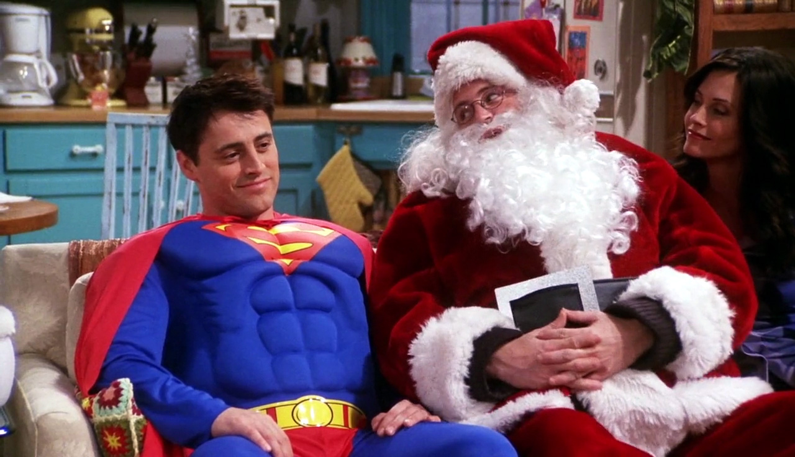
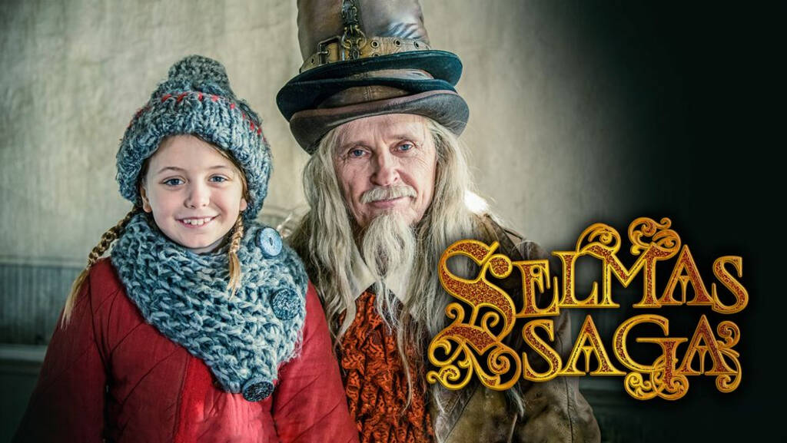
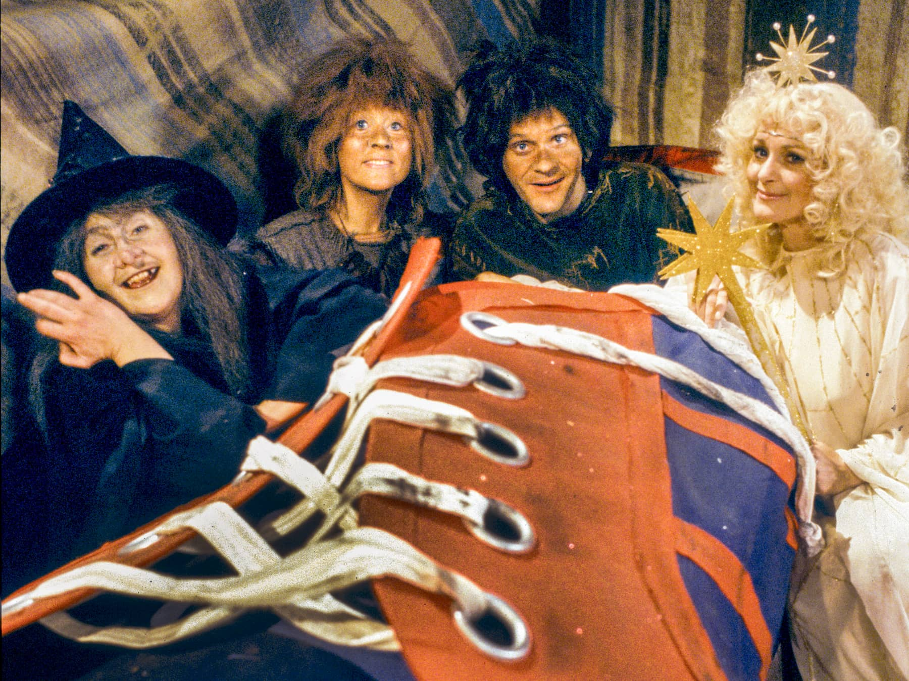
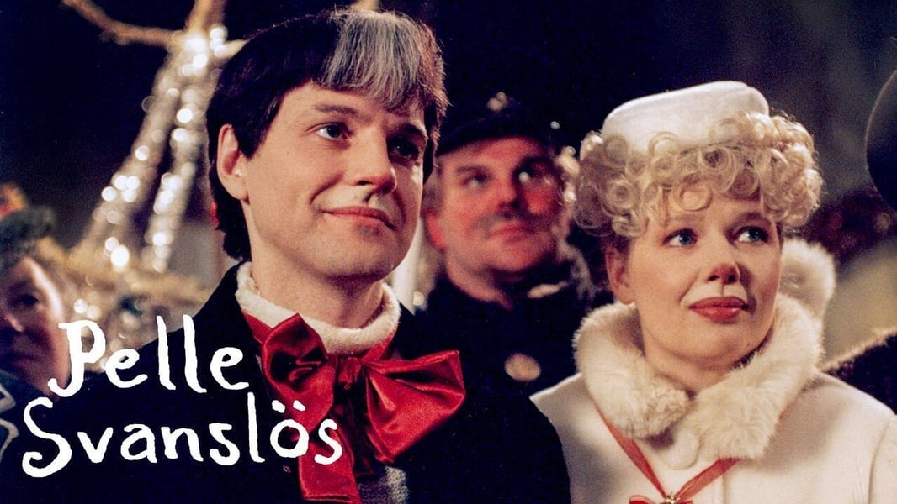
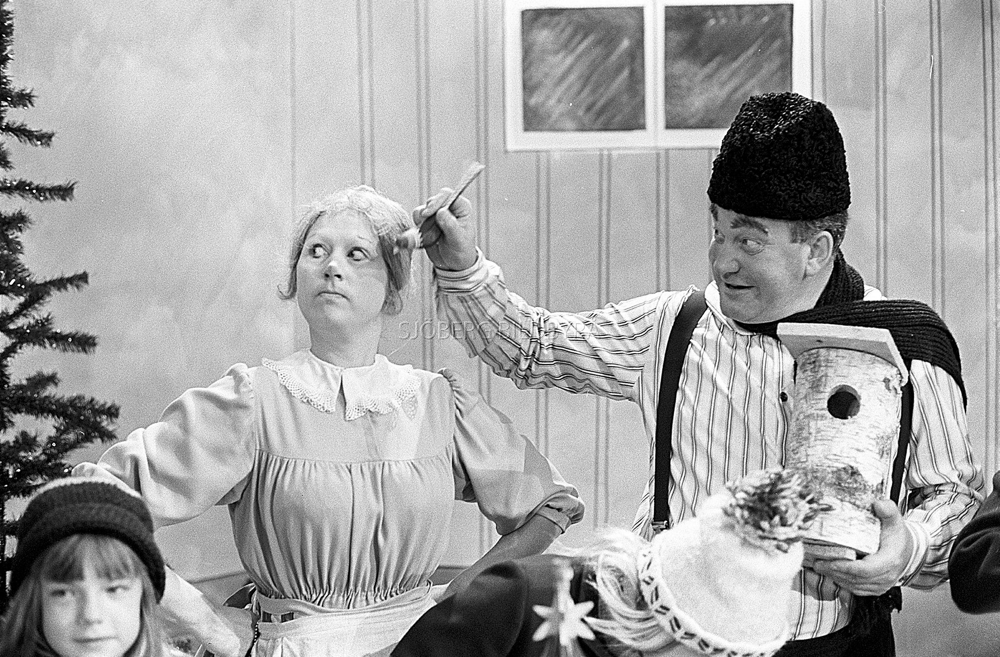

Home Alone (1990)
Home Alone 2: Lost in New York (1992)
Home Alone 3 (1997)
Home Alone 4: Taking Back the House (2002)
Home Alone: The Holday Heist (2012)
Home Sweet Home Alone (2021)
Kevins riktiga bror var med i filmen, han spelade Kevins kusin Fuller McCallister
Fråga 2:
A: The Christmas Chronicles
B: The Office
C: Bad Santa
Fråga 3:
a) Hallmark-filmer / Hallmark-movies

b)
Utspelar sig ofta i en småstad - storstadstjej hälsar på hemma i småstaden, blir kär och flyttar tillbaka till småstaden.
Revolverar ofta kring en framgångsrik, modern kvinna
Pojkvännen i kostym är en dålig pojkvän
Kostymkillen dumpas för småstadsmannen i flannelskjorta, som ofta var den första kärleken
Kärlek är magiskt
Tomen finns på riktigt
De är barnvänliga
De har ett lyckligt slut
Fråga 4:
a) Storbritanniens premiärminister
b) Red Nose Day Actually
c) 1. Blue
Fråga 5:
a) The Holiday Armadillo!
b) Ross son heter Ben
c) Joey var utklädd till Superman och...
d) ... Chandler fick tag på en jultomteklädnad!
Fråga 6:
1-D, Sunes jul visades 1991
2-F, Selmas Saga visades 2016
3-A, Trolltider visades 1979:
Kalendern var så omtyckt att den gick i repris redan sex år senare, år 1985
4-E, Pelle Svanslös visades 1997
5-C, Mysteriet på Greveholm visades år 1996

6-B, Gumman som blev liten som en tesked visades 1967
Även teskedsgumman var så populär att den gick i repris, år 1976
Fråga 7:
a) Candy, candy corn, candy canes and syrup
b) Buddy Hobbs
c) Han blev nedgraderad till leksakstestare, där han vantrivs då han blir rädd för Jack-in-the-box
Fråga 8:
a) 2. Terminator
En julig hälsning från John McClane i Die Hard